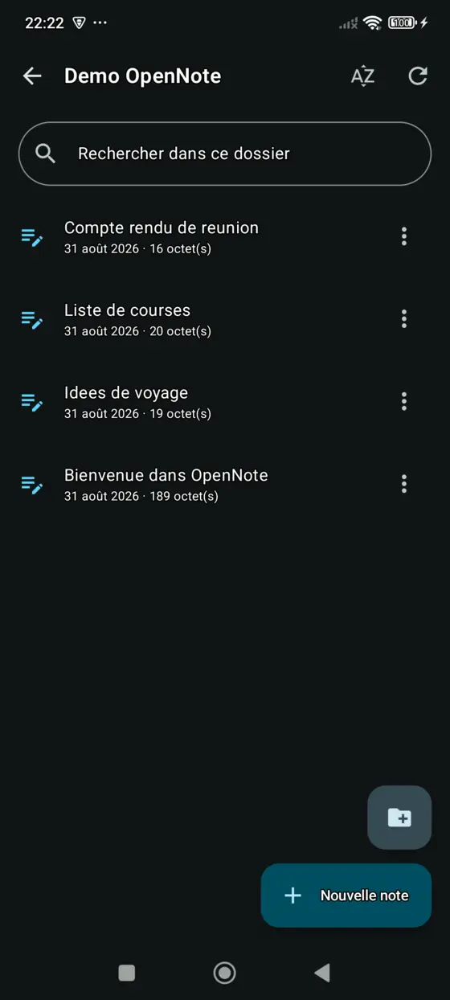
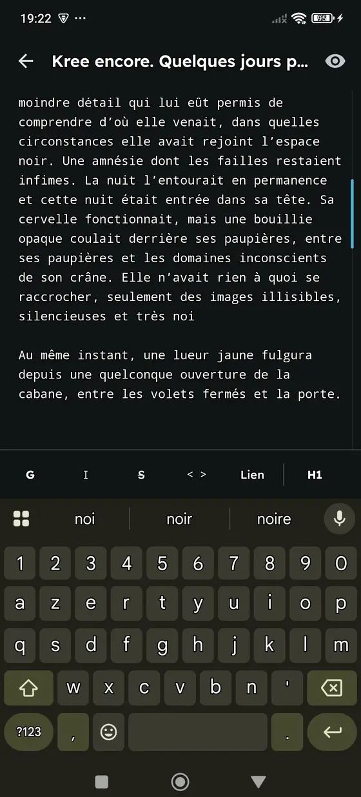
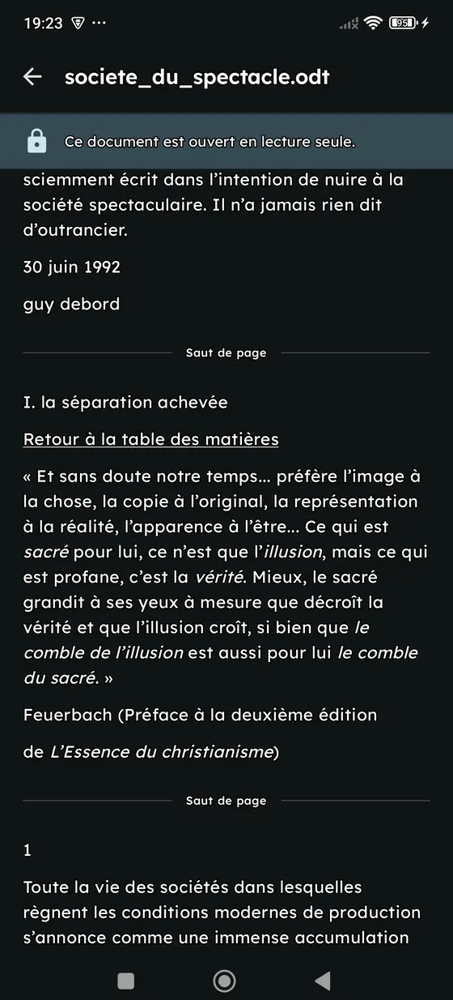

Un éditeur Markdown complet
Création et édition des fichiers .md et .txt, lecture des documents .docx et .odt. Barre de mise en forme Markdown, aperçu du rendu en un geste.
Un carnet léger et open source. Gardez tout sur le téléphone, ou synchronisez avec votre serveur OpenCloud.



Vous choisissez au premier lancement, et vous pouvez changer d'avis plus tard dans les réglages.
Aucun compte, aucun serveur. Vos notes restent sur l'appareil et peuvent être envoyées vers un serveur le jour où vous le décidez.
Vos notes sont de simples fichiers .md dans votre espace OpenCloud. Vous les lisez depuis le navigateur ou n'importe quel autre client.
Création et édition des fichiers .md et .txt, lecture des documents .docx et .odt. Barre de mise en forme Markdown, aperçu du rendu en un geste.
L'application marche sans réseau, les notes sont synchronisées dès que le réseau revient.
Navigation par dossiers ou par date. Interface en français, anglais, espagnol et allemand.
L'APK signé est publié sur GitHub, avec son empreinte SHA-256 pour vérifier le fichier.
Télécharger l'APKOCnotes est en version bêta.